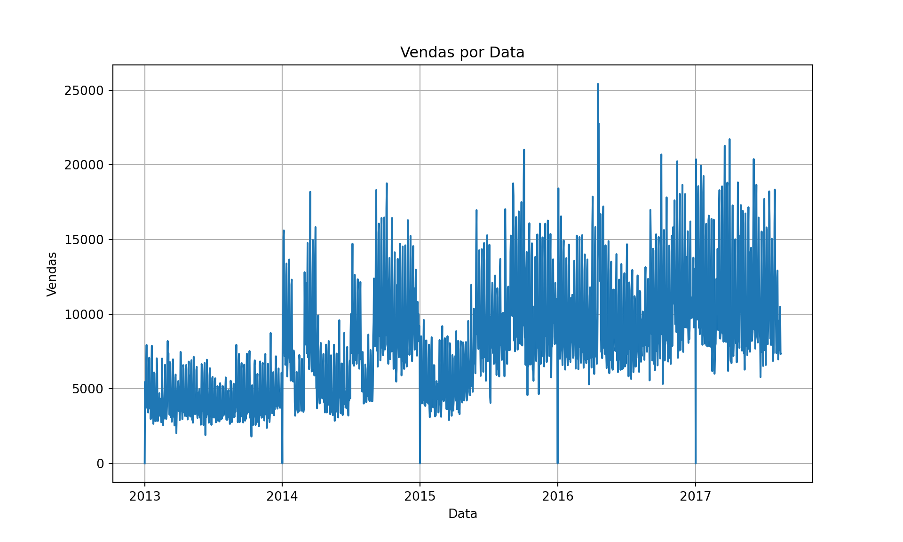
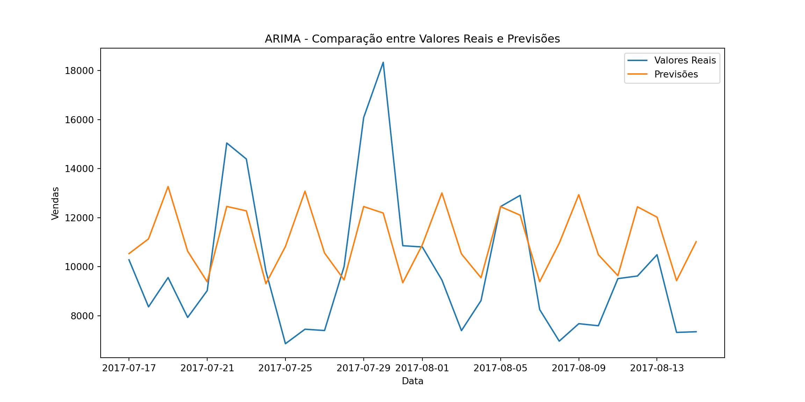
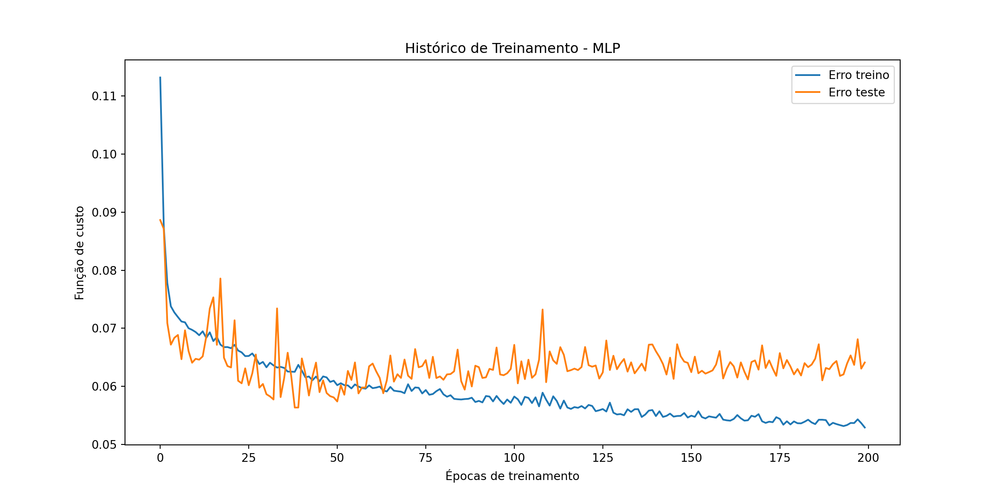
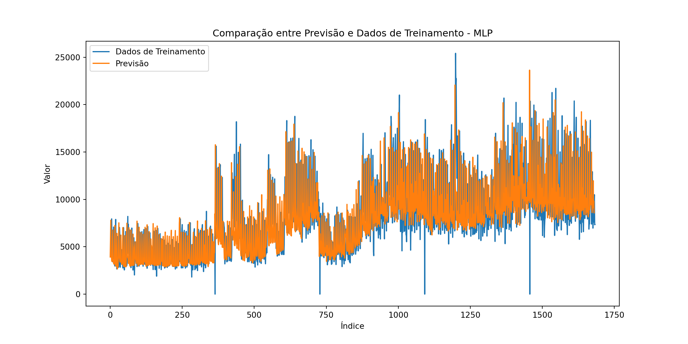
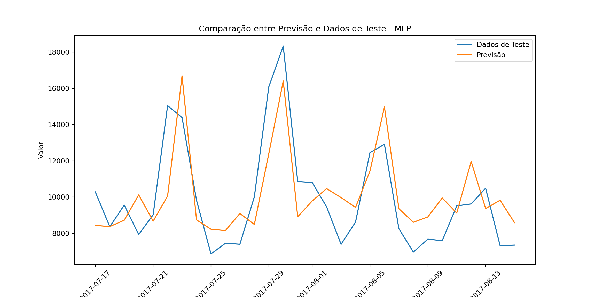
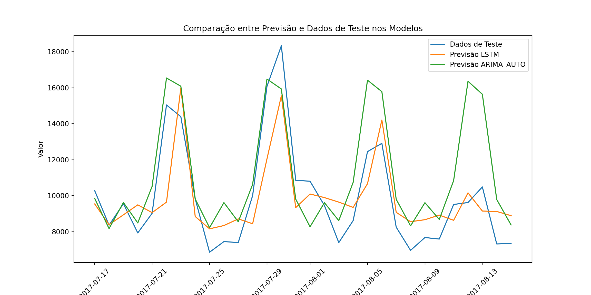

# Importação das bibliotecas
import keras
import pandas as pd
import matplotlib.pyplot as plt
import seaborn as sns
import numpy as np
import plotly.graph_objects as go
import ipywidgets as widgets
from IPython.display import display
from statsmodels.tsa.stattools import adfuller
from datetime import timedelta
from sklearn.metrics import mean_squared_error
from sklearn.preprocessing import MinMaxScaler
import tensorflow as tf
from keras.models import Sequential
from keras.layers import Dense, LSTM
from statsmodels.tsa.arima.model import ARIMA
from pmdarima.arima import auto_arima
from pmdarima import arimaPrevisão de demanda - Corporación Favorita
A previsão de vendas desempenha um papel crucial na gestão de negócios, permitindo que as empresas planejem adequadamente suas operações e tomem decisões informadas. A capacidade de prever com precisão a demanda futura é especialmente importante para varejistas com lojas físicas, como supermercados, que precisam equilibrar cuidadosamente seus estoques para evitar desperdício de alimentos perecíveis e atender às expectativas dos clientes. A utilização de técnicas de previsão baseadas em aprendizado de máquina pode ajudar a aprimorar essa tarefa, oferecendo maior acurácia e eficiência.
Neste trablaho, selecionamos a série temporal de vendas de produtos da Corporación Favorita, uma grande varejista de supermercados com sede no Equador. Faremos uma aplicação empírica prever a demanda da família de produtos ‘bebidas’ da rede de supermercados corporación favorita, mais especificamente de sua unidade 44.
1. Importações
a) Importação das bibliotecas
Primeiramente, vamos realizar as importações das bibliotecas que serão utilizadas:
b) Importação dos datasets
# Importação dos datasets
oil = pd.read_csv('oil.csv')
vendas = pd.read_csv('train.csv')
lojas = pd.read_csv('stores.csv')
transacoes = pd.read_csv('transactions.csv')
feriados = pd.read_csv('holidays_events.csv')2. Transformações nos dados
# Definição das características da previsão
numero_loja = 44 # Número da loja que será prevista
n = 30 # Número de dias que será previsto no modelo
familia = 'BEVERAGES' # Família de produtos que será prevista# Transformações nos dados
# Unir os datasets
vendas = pd.merge(vendas, oil, how='left', on='date')
vendas = pd.merge(vendas, lojas, how='left', on='store_nbr')
# Filtrar apenas a loja que será projetada
vendas = vendas[vendas['store_nbr'] == numero_loja]
vendas = vendas[vendas['family'] == familia]
vendas = vendas.reset_index(drop=True)
# Transformações nas informações do preço do petróleo
vendas = vendas.rename(columns={"dcoilwtico":"oil_price"}) # Renomear a coluna para oil_price
vendas['oil_price'] = vendas['oil_price'].fillna(vendas['oil_price'].mode()[0]) # Valores NA preenchidos com a moda
del feriados, oil, lojas # Deletar bases não utilizadas após uniões
# Converter as datas para formato correto
vendas['date'] = pd.to_datetime(vendas['date']) # Converter a coluna 'date' para o tipo datetime
vendas['cluster'] = vendas['cluster'].astype('category')
#dummies = pd.get_dummies(vendas['family'])
#vendas = pd.concat([vendas, dummies], axis=1)
# Removendo colunas que não serão utilizadas
vendas = vendas.drop('id', axis=1)
vendas = vendas.drop('onpromotion', axis=1)
vendas = vendas.drop('city', axis=1)
vendas = vendas.drop('state', axis=1)
vendas = vendas.drop('store_nbr', axis=1)
vendas = vendas.drop('type', axis=1)
# Visualização do dataframe vendas para verificação
#display(vendas)
vendas.info() #Verificar os tipos das variaveis na base<class 'pandas.core.frame.DataFrame'>
RangeIndex: 1684 entries, 0 to 1683
Data columns (total 5 columns):
# Column Non-Null Count Dtype
--- ------ -------------- -----
0 date 1684 non-null datetime64[ns]
1 family 1684 non-null object
2 sales 1684 non-null float64
3 oil_price 1684 non-null float64
4 cluster 1684 non-null category
dtypes: category(1), datetime64[ns](1), float64(2), object(1)
memory usage: 54.5+ KB3. Divisão entre amostra de treino e teste
# Divisão entre amostra de treino e teste
data_corte = vendas['date'].max() - timedelta(days=n) #Calcula a data de corte entre treino e teste
vendas_treino = vendas.loc[vendas['date'] <= data_corte]
vendas_teste = vendas.loc[vendas['date'] > data_corte]
# Modificar estrutura de data para colunas
vendas['Ano'] = vendas['date'].dt.year
vendas['Mês'] = vendas['date'].dt.month
vendas['Dia'] = vendas['date'].dt.day
#vendas = vendas.drop('date', axis=1)
vendas['Ano'] = vendas['Ano'].astype('category')
vendas['Mês'] = vendas['Mês'].astype('category')
vendas['Dia'] = vendas['Dia'].astype('category')
#display(vendas_treino)
#display(vendas_teste)4. Análise Gráfica
vendas_agg = vendas.groupby('date')['sales'].sum().reset_index()
# Configurar o gráfico
plt.figure(figsize=(10, 6))
plt.plot(vendas_agg['date'], vendas_agg['sales'], '-')
plt.xlabel('Data')
plt.ylabel('Vendas')
plt.title('Vendas por Data')
plt.grid(True)
# Mostrar o gráfico
plt.show()
5. Modelagem
a) ARIMA
- Testes de estacionariedade
# Aplicar os testes ADF
none = adfuller(vendas_treino['sales'], regression= 'n')
drift = adfuller(vendas_treino['sales'], regression='c')
trend = adfuller(vendas_treino['sales'], regression='ct')
# Extrair as estatísticas dos testes ADF
# Teste NONE:
adf_none = none[0]
p_valor_none = none[1]
vc_none = none[4]
# Teste Drift:
adf_drift = drift[0]
p_valor_drift = drift[1]
vc_drift = drift[4]
# Teste Trend:
adf_trend = trend[0]
p_valor_trend = trend[1]
vc_trend = trend[4]
# Mostrar os resultado:
# Teste NONE:
print('Estatística ADF (None):', adf_none)
print('p-valor: %f' % none[1])
print('Valores Críticos:')
for key, value in vc_none.items():
print('%s: %.3f' % (key, value))
if adf_none < none[4]['1%']:
print('A série indica estacionariedade em nível no teste sem intercepto e sem tendência (none).')
else:
print('Segundo o teste sem intercepto e sem tendência (none), você deve diferenciar a série.')
print('\n')
# Teste drift
print('Estatística ADF (Drift):', adf_drift)
print('p-valor: %f' % drift[1])
print('Valores Críticos:')
for key, value in vc_drift.items():
print('%s: %.3f' % (key, value))
if adf_drift < drift[4]['1%']:
print('A série indica estacionariedade em nível no teste com intercepto (drift).')
else:
print('Segundo o teste com intercepto (drift), você deve diferenciar a série.')
print('\n')
# Teste trend
print('Estatística ADF (Trend):', adf_trend)
print('p-valor: %f' % trend[1])
print('Valores Críticos:')
for key, value in vc_trend.items():
print('%s: %.3f' % (key, value))
if adf_trend < trend[4]['1%']:
print('A série indica estacionariedade em nível no teste com intercepto e tendência (trend).')
else:
print('Segundo o teste com intercepto e tendência (trend), você deve diferenciar a série.')
print('\n')Estatística ADF (None): -0.48432407823739815p-valor: 0.502556Valores Críticos:1%: -2.567
5%: -1.941
10%: -1.617Segundo o teste sem intercepto e sem tendência (none), você deve diferenciar a série.Estatística ADF (Drift): -2.827867645777691p-valor: 0.054402Valores Críticos:1%: -3.434
5%: -2.863
10%: -2.568Segundo o teste com intercepto (drift), você deve diferenciar a série.Estatística ADF (Trend): -5.349081542796824p-valor: 0.000045Valores Críticos:1%: -3.964
5%: -3.413
10%: -3.129A série indica estacionariedade em nível no teste com intercepto e tendência (trend).- ARIMA: Modelagem manual
C:\Users\ALEXAN~1\ANACON~1\lib\site-packages\statsmodels\tsa\base\tsa_model.py:473: ValueWarning: A date index has been provided, but it has no associated frequency information and so will be ignored when e.g. forecasting.
self._init_dates(dates, freq)
C:\Users\ALEXAN~1\ANACON~1\lib\site-packages\statsmodels\tsa\base\tsa_model.py:473: ValueWarning: A date index has been provided, but it has no associated frequency information and so will be ignored when e.g. forecasting.
self._init_dates(dates, freq)
C:\Users\ALEXAN~1\ANACON~1\lib\site-packages\statsmodels\tsa\base\tsa_model.py:473: ValueWarning: A date index has been provided, but it has no associated frequency information and so will be ignored when e.g. forecasting.
self._init_dates(dates, freq)C:\Users\ALEXAN~1\ANACON~1\lib\site-packages\statsmodels\base\model.py:607: ConvergenceWarning: Maximum Likelihood optimization failed to converge. Check mle_retvals
warnings.warn("Maximum Likelihood optimization failed to "C:\Users\ALEXAN~1\ANACON~1\lib\site-packages\statsmodels\tsa\base\tsa_model.py:836: ValueWarning: No supported index is available. Prediction results will be given with an integer index beginning at `start`.
return get_prediction_index(inicio = '2013-01-01'
fim = vendas['date'].max() - timedelta(days=n)
p = 3
d = 1
q = 4
# Criar uma cópia do DataFrame 'vendas' com as colunas 'date' e 'sales' para os dados de teste
dados_treino = vendas_treino[['date', 'sales']].copy()
# Definir a coluna 'date' como índice do DataFrame dos dados de teste
dados_treino.set_index('date', inplace=True)
# Crie uma instância do modelo ARIMA
model = ARIMA(dados_treino['sales'], order=(p, d, q))
# Ajuste o modelo aos dados de treinamento
model_fit = model.fit()
# Faça previsões usando o modelo ajustado para os próximos 15 passos
predictions = model_fit.forecast(steps=n)
predictions_treino = model_fit.predict(start=inicio, end=fim)Visualização das previsões realizadas e comparação com os dados de teste

- ARIMA: Modelagem automática
import matplotlib.pyplot as plt
import numpy as np
from sklearn.metrics import mean_squared_error
from pmdarima.arima import auto_arima
# Criar o modelo Auto ARIMA
model_auto = auto_arima(dados_treino['sales'], trace=True)
# Ajustar o modelo aos dados de treinoPerforming stepwise search to minimize aic
ARIMA(2,1,2)(0,0,0)[0] intercept : AIC=30593.013, Time=0.74 sec
ARIMA(0,1,0)(0,0,0)[0] intercept : AIC=31343.115, Time=0.02 sec
ARIMA(1,1,0)(0,0,0)[0] intercept : AIC=31343.179, Time=0.03 sec
ARIMA(0,1,1)(0,0,0)[0] intercept : AIC=31107.862, Time=0.43 sec
ARIMA(0,1,0)(0,0,0)[0] : AIC=31341.131, Time=0.02 sec
ARIMA(1,1,2)(0,0,0)[0] intercept : AIC=30612.116, Time=0.91 sec
ARIMA(2,1,1)(0,0,0)[0] intercept : AIC=30568.558, Time=1.01 sec
ARIMA(1,1,1)(0,0,0)[0] intercept : AIC=30838.227, Time=0.74 sec
ARIMA(2,1,0)(0,0,0)[0] intercept : AIC=31015.456, Time=0.11 sec
ARIMA(3,1,1)(0,0,0)[0] intercept : AIC=30571.389, Time=1.19 sec
ARIMA(3,1,0)(0,0,0)[0] intercept : AIC=31004.819, Time=0.14 sec
ARIMA(3,1,2)(0,0,0)[0] intercept : AIC=30636.005, Time=1.32 sec
ARIMA(2,1,1)(0,0,0)[0] : AIC=30567.039, Time=0.56 sec
ARIMA(1,1,1)(0,0,0)[0] : AIC=30837.309, Time=0.38 sec
ARIMA(2,1,0)(0,0,0)[0] : AIC=31013.482, Time=0.08 sec
ARIMA(3,1,1)(0,0,0)[0] : AIC=30621.892, Time=0.37 sec
ARIMA(2,1,2)(0,0,0)[0] : AIC=30564.302, Time=0.68 sec
ARIMA(1,1,2)(0,0,0)[0] : AIC=30610.986, Time=0.45 sec
ARIMA(3,1,2)(0,0,0)[0] : AIC=30555.521, Time=0.98 sec
ARIMA(4,1,2)(0,0,0)[0] : AIC=29887.763, Time=1.58 sec
ARIMA(4,1,1)(0,0,0)[0] : AIC=30420.878, Time=0.38 sec
ARIMA(5,1,2)(0,0,0)[0] : AIC=29716.577, Time=1.40 sec
ARIMA(5,1,1)(0,0,0)[0] : AIC=29944.233, Time=0.47 sec
ARIMA(5,1,3)(0,0,0)[0] : AIC=29716.541, Time=1.86 sec
ARIMA(4,1,3)(0,0,0)[0] : AIC=29820.992, Time=1.80 sec
ARIMA(5,1,4)(0,0,0)[0] : AIC=29597.841, Time=1.63 sec
ARIMA(4,1,4)(0,0,0)[0] : AIC=29793.836, Time=2.22 sec
ARIMA(5,1,5)(0,0,0)[0] : AIC=29465.590, Time=2.85 sec
ARIMA(4,1,5)(0,0,0)[0] : AIC=29564.776, Time=2.64 sec
ARIMA(5,1,5)(0,0,0)[0] intercept : AIC=29469.371, Time=2.91 sec
Best model: ARIMA(5,1,5)(0,0,0)[0]
Total fit time: 29.901 secondsmodel_auto_fit = model_auto.fit(dados_treino['sales'])
# Fazer previsões usando o modelo ajustado para os próximos 15 passos
predictions_auto = model_auto.predict(n_periods=n)C:\Users\ALEXAN~1\ANACON~1\lib\site-packages\statsmodels\tsa\base\tsa_model.py:836: ValueWarning: No supported index is available. Prediction results will be given with an integer index beginning at `start`.
return get_prediction_index(predictions_treino_auto = model_fit.predict(start=inicio, end=fim)
# Converter as previsões em um array numpy
predictions_auto = np.array(predictions_auto)
# Calculando o RMSE
rmse_arima_auto = np.sqrt(mean_squared_error(valores_reais_teste, predictions_auto))
rmse_arima_treino_auto = np.sqrt(mean_squared_error(valores_reais_treino, predictions_treino_auto))import matplotlib.pyplot as plt
import numpy as np
from sklearn.metrics import mean_squared_error
from pmdarima.arima import auto_arima
# Criar o modelo Auto ARIMA
model_auto = auto_arima(dados_treino['sales'], trace=True)
# Ajustar o modelo aos dados de treino
model_auto_fit = model_auto.fit(dados_treino['sales'])
# Fazer previsões usando o modelo ajustado para os próximos 15 passos
predictions_auto = model_auto.predict(n_periods=n)
predictions_treino_auto = model_fit.predict(start=inicio, end=fim)
# Converter as previsões em um array numpy
predictions_auto = np.array(predictions_auto)
# Calculando o RMSE
rmse_arima_auto = np.sqrt(mean_squared_error(valores_reais_teste, predictions_auto))
rmse_arima_treino_auto = np.sqrt(mean_squared_error(valores_reais_treino, predictions_treino_auto))Visualização das previsões realizadas e comparação com os dados de teste
b) Redes neurais artificiais (RNA)
- MLP:
epocas = 200
base_nivel = pd.DataFrame({
'V1': vendas['sales'].shift(0),
'V2': vendas['sales'].shift(1),
'V3': vendas['sales'].shift(2),
'V4': vendas['oil_price'].shift(0),
'V5': vendas['Ano'].shift(0),
'V6': vendas['Mês'].shift(0),
'V7': vendas['Dia'].shift(0),
})
scaler = MinMaxScaler()
base = pd.DataFrame(scaler.fit_transform(base_nivel), columns=base_nivel.columns)
base = base.iloc[3:]
y_treino = base['V1'].astype(float)
x_treino = base.drop('V1', axis=1)
y_teste = base.tail(n)['V1'].astype(float)
x_teste = base.tail(n).drop('V1', axis=1)
from keras import backend as K
def root_mean_squared_error(y_true, y_pred):
return K.sqrt(K.mean(K.square(y_pred - y_true), axis=-1))
# Criando a arquitetura da rede neural:
modelo_mlp = Sequential()
modelo_mlp.add(Dense(units=50, activation='relu', input_dim=x_treino.shape[1]))
modelo_mlp.add(Dense(units=1, activation='linear'))
# Treinando a rede neural:
modelo_mlp.compile(loss=root_mean_squared_error, optimizer='adam', metrics=['mae'])
resultado_mlp = modelo_mlp.fit(x_treino, y_treino, epochs=epocas, batch_size=32, validation_data=(x_teste, y_teste))
# Valores mínimos e máximos para desnormalizar
y_min = base_nivel['V1'].min()
y_max = base_nivel['V1'].max()
# Extrair valores de previsão do modelo
previsao_treino = modelo_mlp.predict(x_treino)
previsao_teste = modelo_mlp.predict(x_teste)
# Desnormalização da previsão
previsao_desnormalizada = previsao_teste * (y_max - y_min) + y_min
previsao_treino_desnormalizada = previsao_treino * (y_max - y_min) + y_min
y_teste_desnormalizado = y_teste * (y_max - y_min) + y_min
y_treino_desnormalizado = y_treino * (y_max - y_min) + y_minVisualização das previsões realizadas e comparação com os dados de teste


(array([17364., 17368., 17372., 17376., 17379., 17383., 17387., 17391.]), [Text(0, 0, ''), Text(0, 0, ''), Text(0, 0, ''), Text(0, 0, ''), Text(0, 0, ''), Text(0, 0, ''), Text(0, 0, ''), Text(0, 0, '')])
- LSTM:
# Criando a arquitetura da rede neural LSTM:
modelo_lstm = Sequential()
modelo_lstm.add(LSTM(units=50, activation='relu', input_shape=(x_treino.shape[1], 1)))
modelo_lstm.add(Dense(units=10, activation='relu'))
modelo_lstm.add(Dense(units=1, activation='linear'))
# Reshape dos dados de entrada para o formato [samples, timesteps, features]
x_treino_lstm = x_treino.values.reshape((x_treino.shape[0], x_treino.shape[1], 1))
x_teste_lstm = x_teste.values.reshape((x_teste.shape[0], x_teste.shape[1], 1))
# Treinando a rede neural LSTM:
modelo_lstm.compile(loss=root_mean_squared_error, optimizer='adam', metrics=['mae'])
resultado_lstm = modelo_lstm.fit(x_treino_lstm, y_treino, epochs=epocas, batch_size=15, validation_data=(x_teste_lstm, y_teste))
# Extrair valores de previsão do modelo LSTM
previsao_treino_lstm = modelo_lstm.predict(x_treino_lstm)
previsao_teste_lstm = modelo_lstm.predict(x_teste_lstm)
# Desnormalização da previsão LSTM
previsao_desnormalizada_lstm = previsao_teste_lstm * (y_max - y_min) + y_min
previsao_treino_desnormalizada_lstm = previsao_treino_lstm * (y_max - y_min) + y_min
y_teste_desnormalizado = y_teste * (y_max - y_min) + y_min
y_treino_desnormalizado = y_treino * (y_max - y_min) + y_minVisualização das previsões realizadas e comparação com os dados de teste
6. Comparar resultados dos modelos
a) Análise Gráfica
(array([17364., 17368., 17372., 17376., 17379., 17383., 17387., 17391.]), [Text(0, 0, ''), Text(0, 0, ''), Text(0, 0, ''), Text(0, 0, ''), Text(0, 0, ''), Text(0, 0, ''), Text(0, 0, ''), Text(0, 0, '')])
¹A modelagem manual do ARIMA forneceu menor precisão que sua vertente automática, portanto foi ocultada.
²O modelo de rede neural MLP teve maior overfitting e menor precisão na amostra de teste, portanto foi ocultada.
b) Avaliação da precisão
RMSE Modelo ARIMA no treino: 2277.85RMSE Modelo ARIMA no teste: 2926.24RMSE Modelo ARIMA_AUTO no treino: 2277.85RMSE Modelo ARIMA_AUTO no teste: 2234.24RMSE Modelo MLP no treino: 8454.04RMSE Modelo MLP no teste: 10354.03RMSE Modelo LSTM no treino: 8515.02RMSE Modelo LSTM no teste: 10049.03